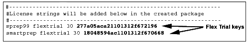

Operating Documentation
Direction 5114043-800, Rev# 9
LightSpeed 3.X Service Methods (Advanced)
Operating Documentation |
| Last Revised: | 14 April, 2004 |
FlexTrial is a trial program offering GE Healthcare customers a chance to “try before they buy” purchase option software. It helps customers evaluate application software - with no financial obligation or risk.
Option keys are automatically activated for 30 days through an automated web-based download procedure. For sites that can not be accessed remotely, a key can be sent to a local GE employee, via e-mail or file download, and configured on the system manually.
Before any FlexTrial option can be ordered, two pieces of information must be obtained from the system. If this information is not obtained, the request will be invalid.
System ID. This is the system ID used when problem calls are placed for the system (i.e., Cares or Must). This identifies the means by which the service organizations uniquely identify the system.
The system’s unique Host ID. To find this ID number: at the Computer Console, go to the [SERVICE DESKTOP] and select [SHELL] . At the system prompt, type the following:
check_config<Enter>
The system will respond with a number up to 10 digits (e.g., 1234567890). This is the system’s unique Host ID number. No two SGI computers have the same number.
To request a software option FlexTrial:
On the internet, call up the GE Healthcare URL (http://www.gehealthcare.com) and select the community tab, or contact your local Software Sales Representative.
In the Americas, contact GE Healthcare Direct at 1-800-886-0815
In Europe, contact GEMSE Direct at 00 800 CALL GEMS (00 800 2255 4367)
Northern Europe local +44 1753 874 881
Iberian Peninsula +34 91 375 4584
France +33 1 49 93 22 46
Central Europe +49 69 95 30 72 23
Italy +39 02 754 19 681
In Asia, contact James Tan at +65-97 36 82 43
or your local Service Sales Specialist.
The Software Sales Representative will verify system compatibility and forward the customer a FlexTrial agreement confirming their interest in the software for a limited trial of 30 days.
Time will expire for the software option at the completion of the 30 day period.
Once connectivity of the system is established and successful download of the required key(s) has been achieved, the process requires no intervention by local GE personnel. The option key will be shown in the options list, but an application shutdown and startup, as prompted by the system, is required for the option to be enabled.
A number string that represents the software license key will be generated. This key is valid for only 30 days. Once the key has been generated, it can be e-mailed, FTP’ed to GLOBE, or sent to an address designated by the Software Sales Representative at the time the request was placed.
| NOTE: | Once a FlexTrial Key is generated, it only works for 30 days. Any delay in manually configuring the key to the customer site will shorten the time the customer has to try the feature. |
If you are to receive a license Key for a site, your e-mail will receive a new message with the subject line, “License Key File for SysID:XXXX”. XXXX will be the system ID used when ordering the FlexTrial. Open the message and scroll to the bottom of the message to find the activation key(s). See Illustration 1.
Illustration 1: FlexTrial keystring is the last 24 character string at the bottom

Illustration 1 shows two keys that have been sent. The number of keys depends on how many were ordered.
Once the keys are received, to activate, do the following at the system computer:
Go into the Service Desktop → Utilities → Install Options → Start.
The Software Options window will be displayed. Select [INSTALL] . The window titled Select Mechanism appears.
From the Select Mechanism window, select [FLEX TRIAL] . The Enter String window appears.
In the Enter String window, enter the 24-digit character license string, and select [ACCEPT] . The Software Options window is displayed.
From the Software Options window, select [QUIT] . The Options window is then displayed.
In the Options window, select [OK] .
Restart the applications software, or shutdown and reboot the system by selecting the [SHUTDOWN] icon.
To permanently install a purchased permanent option with a downloaded option key, follow the procedure below.
Go into the Service Desktop → Utilities → Install Options → Start.
The Software Options window will come up. Select [INSTALL] . The window titled Select Mechanism will be displayed.
From the Select Mechanism window, select [PERMANENT] . The Select Device window appears.
From the Select Device window, select [MANUAL] . The Enter String window then appears.
In the Enter String window, enter the 24-digit character license string, and select [ACCEPT] . The Software Options window is displayed.
From the Software Options window, select [QUIT] . The Options window is displayed.
In the Options window, select [OK] .
Restart the applications software or shutdown and reboot the system by selecting the [SHUTDOWN] icon.
Should there be a need to de-install a FlexTrial option before its 30 day expiration period, follow the procedure below:
Go into the Service Desktop → Utilities → Install Options → Start.
The Software Options window will come up. Select the option(s) to be de-installed and select [REMOVE] . The SW Options Error window appears.
From the SW Options Error window, select [OK] to permanently remove the option. The Software Options window appears.
From the Software Options window, select [QUIT] . The Options window appears.
In the Options window, select [OK] .
Restart the applications software or shutdown and reboot the system by selecting the [SHUTDOWN] icon.